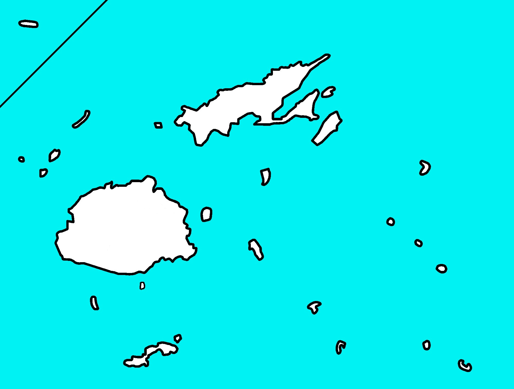

L'Océanie est un « continent » composé d'îles : l'Australie, qui est la plus grande île du monde, la Nouvelle-Zélande, la Papouasie-Nouvelle-Guinée et environ 10 000 îles de l'océan Pacifique. Elles sont réparties en trois grands groupes, donc voici:
la Polynésie
la Mélanésie
la Micronésie
Il compte en tous 14 pays
A
Hymne national:
Avance belle et juste Australie
C
Hymne national:
Dieu est la vérité
F
Hymne national:
Dieu Bénisse les Fidji
K
Hymne national:
Debout Kiribati
M
Hymne national:
Îles Marshall pour toujours

Hymne national:
Patriotes de Micronésie
N
Hymne national:
Nauru Notre patrie

Hymne national:
Le seigneur du Paradis
Hymne national:
Dieu Défende la Nouvelle-Zélande
P
Hymne national:
Nos Palaos
Hymne national:
Ô manifestez, tous vous enfants de ce pays
S
Hymne national:
La Bannière de la Liberté
Hymne national:
Dieu Sauve nos Iles Salomon
T

Hymne national:
Chanson du Roi des îles Tonga
Hymne national:
Les Tuvalu avec Dieu
V
Hymne national:
Nous, nous, nous